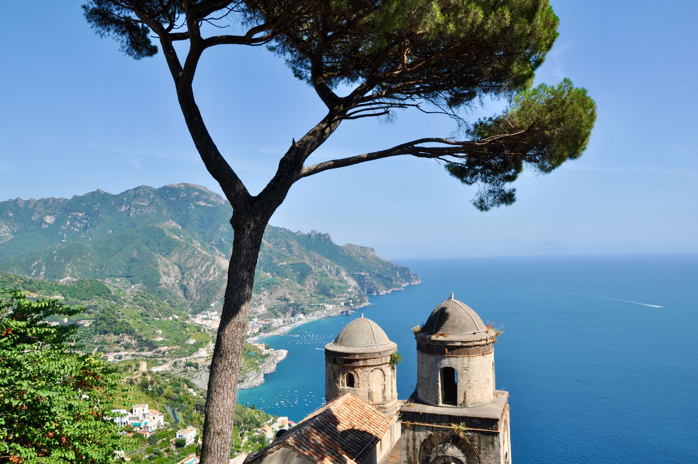
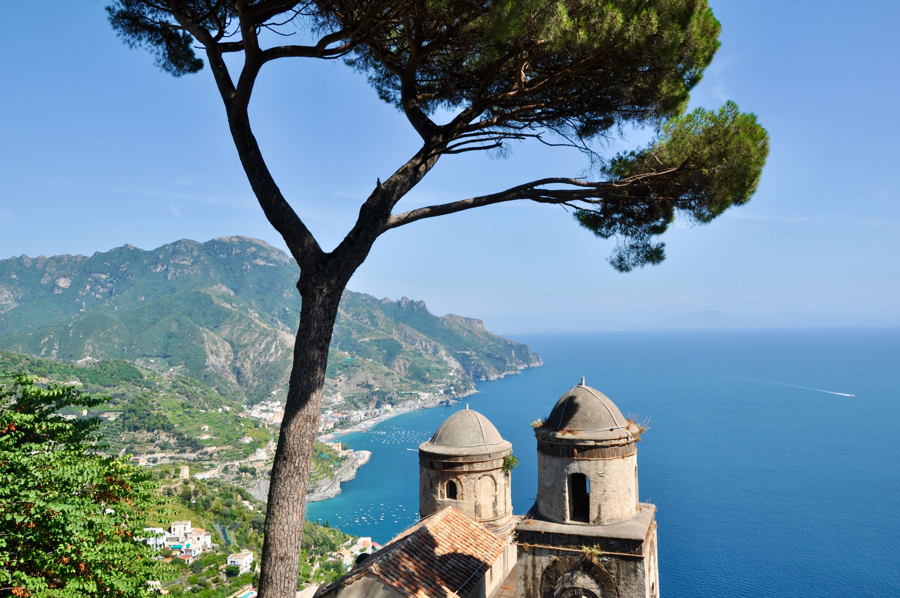

The Amalfi Coast, nestled along the southern edge of Italy's Sorrentine Peninsula, is a breathtaking stretch of coastline renowned for its unparalleled beauty and charm. This stunning Mediterranean gem captivates visitors with its dramatic cliffs, pic- turesque fishing villages, and azure waters.


 
